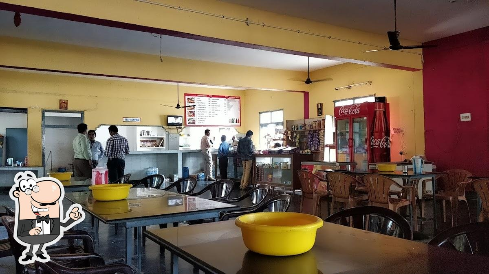

Our Facilities
We have Top Class Facilitie

World Class Library
Around 50k+ books available in our college. Our college library is rated as 2nd largest library in Kadapa.

Big Play Ground
Our College provides best Volleyball court, Cricket Ground and U can also play some games like Shuttle, Tennis, Carroms.

Tasty And Healthy Food
We have good chefs who cooks and provides a healthy food in our cafeteria.